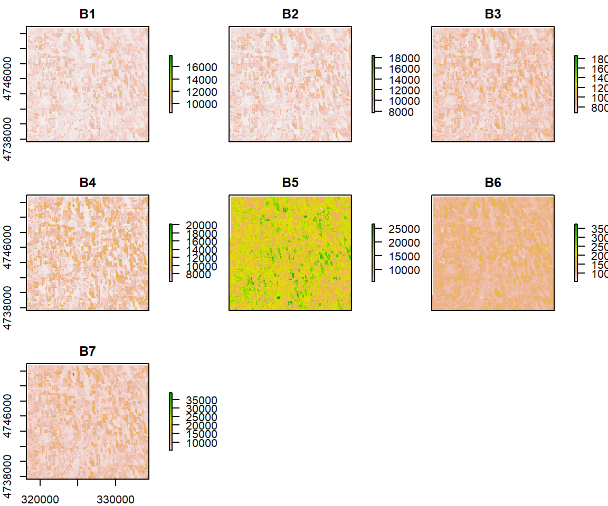
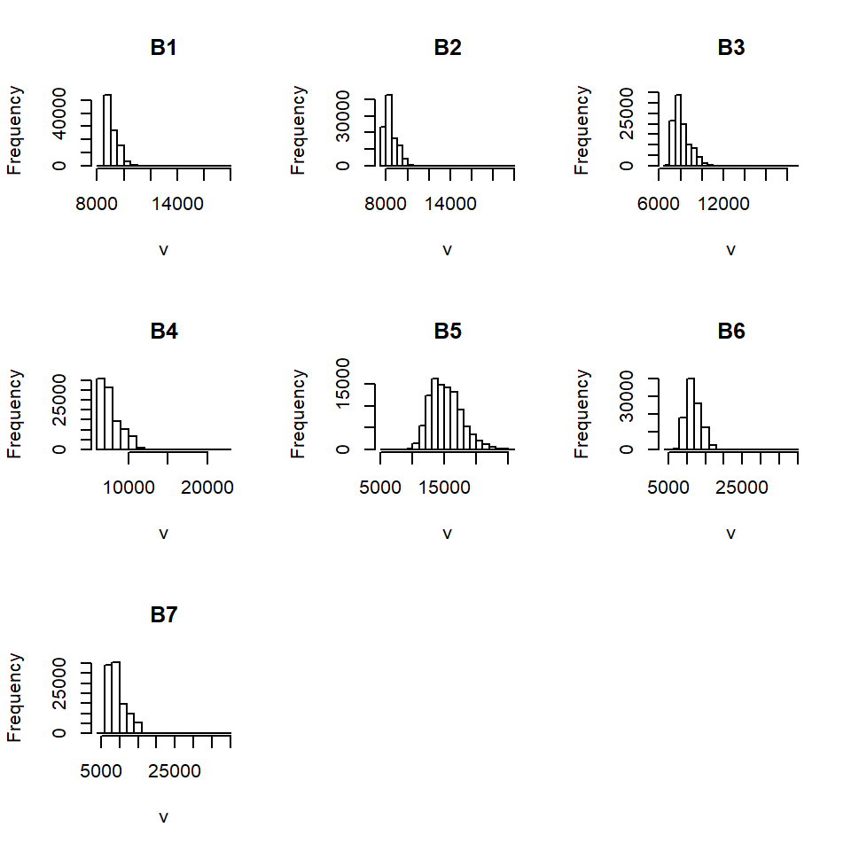
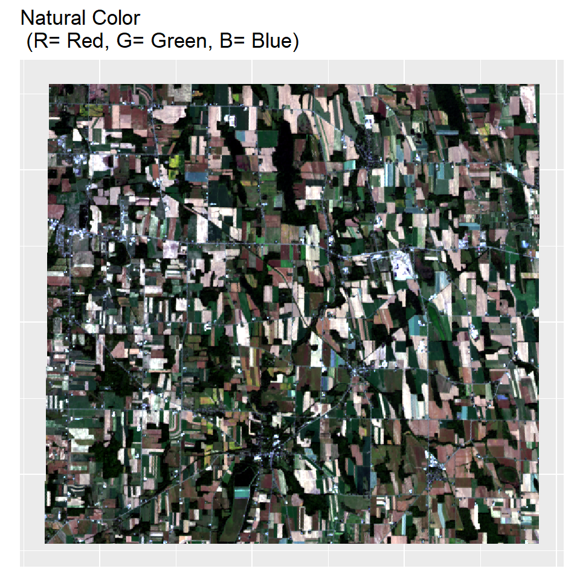
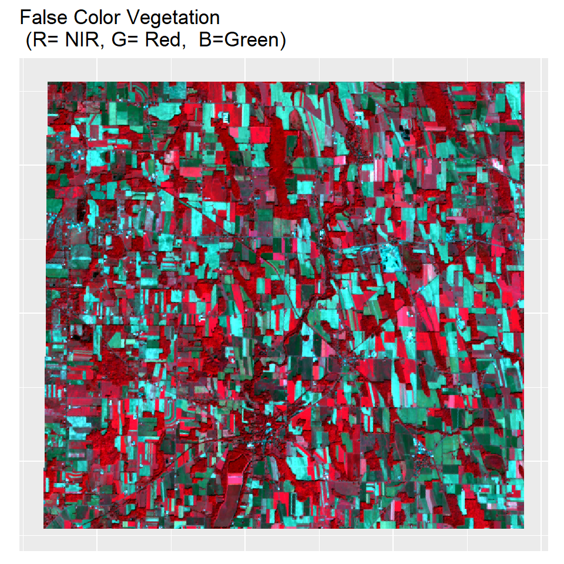
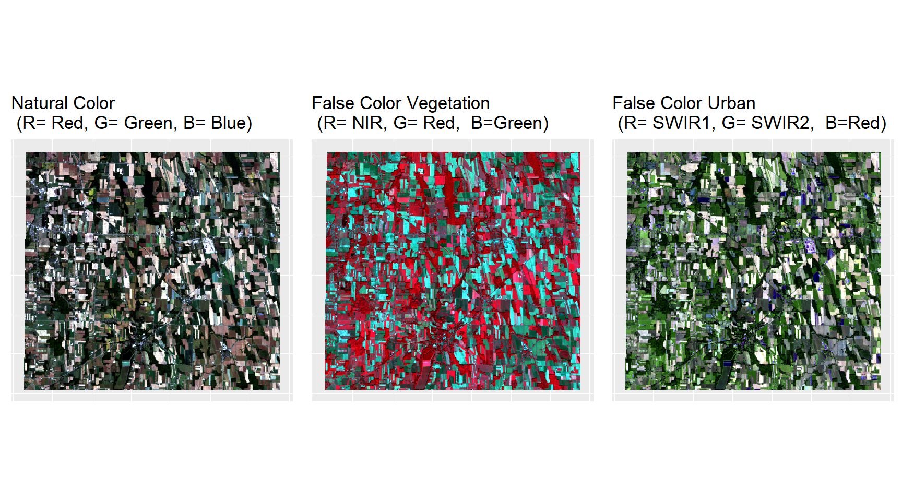
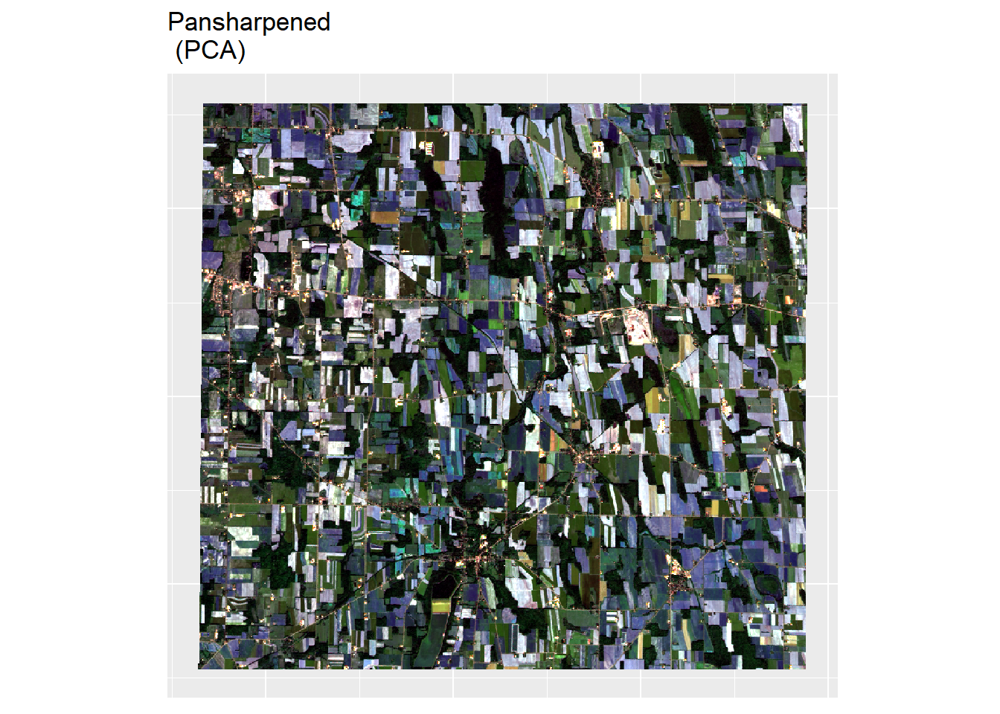
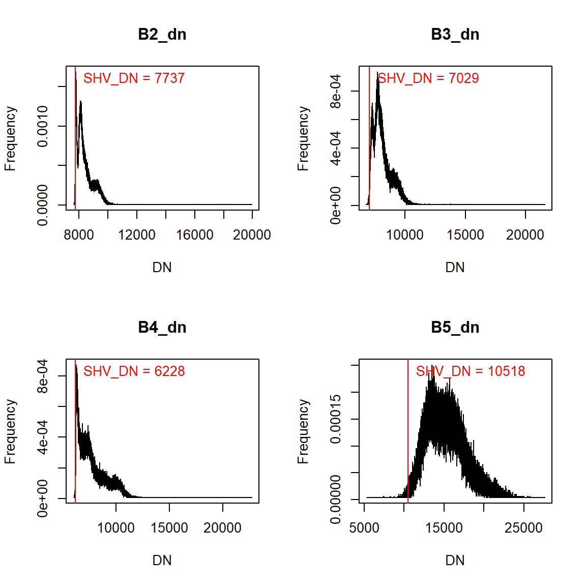

Landsat 8 Image Processing & Visualization
In this lesson, we will use a Landsat 8 image of the Finger Lakes region in New York State, which acquired on September 27, 2016. We will use the R-package RStoolbox to do the Landsat image processing and analysis, such as calculating spectral indices and performing principal component transformation, texture analysis, unsupervised and supervised classification and fractional cover analyses.
This Lesson will cover:
Load packages:
library (raster) # raster data
library(rasterVis) # raster visualisation
library(sp) # spatial data processing
library(rgdal) # spatial data processing
library(RStoolbox) # Image analysis
library(ggplot2) # plotting
library(gridExtra)The data could be available for download from here.
# Define data folder
dataFolder<-"F://Spatial_Data_Processing_and_Analysis_R//Data//DATA_09//"Import metadata file (*.MTL):
mtlFile =paste0(dataFolder,".//Landsat8//Landsat8_RAW//LC08_L1TP_016030_20160927_20170220_01_T1_MTL.txt") # metadata file
metaData= readMeta(mtlFile) # read metadata file
summary(metaData)## Scene: LC80160302016271LGN01
## Satellite: LANDSAT8
## Sensor: OLI_TIRS
## Date: 2016-09-27
## Path/Row: 16/30
## Projection: +proj=utm +zone=18 +units=m +datum=WGS84 +ellps=WGS84 +towgs84=0,0,0
##
## Data:
## FILES QUANTITY CATEGORY
## B1_dn LC08_L1TP_016030_20160927_20170220_01_T1_B1.TIF dn image
## B2_dn LC08_L1TP_016030_20160927_20170220_01_T1_B2.TIF dn image
## B3_dn LC08_L1TP_016030_20160927_20170220_01_T1_B3.TIF dn image
## B4_dn LC08_L1TP_016030_20160927_20170220_01_T1_B4.TIF dn image
## B5_dn LC08_L1TP_016030_20160927_20170220_01_T1_B5.TIF dn image
## B6_dn LC08_L1TP_016030_20160927_20170220_01_T1_B6.TIF dn image
## B7_dn LC08_L1TP_016030_20160927_20170220_01_T1_B7.TIF dn image
## B9_dn LC08_L1TP_016030_20160927_20170220_01_T1_B9.TIF dn image
## B10_dn LC08_L1TP_016030_20160927_20170220_01_T1_B10.TIF dn image
## B11_dn LC08_L1TP_016030_20160927_20170220_01_T1_B11.TIF dn image
## B8_dn LC08_L1TP_016030_20160927_20170220_01_T1_B8.TIF dn pan
## QA_dn LC08_L1TP_016030_20160927_20170220_01_T1_BQA.TIF dn qa
##
## Available calibration parameters (gain and offset):
## dn -> radiance (toa)
## dn -> reflectance (toa)
## dn -> brightness temperature (toa)Import bands 1,2,3,4,5,6 and 7:
bandList <- paste0(dataFolder,".\\Landsat8\\Landsat8_RAW\\LC08_L1TP_016030_20160927_20170220_01_T1_B", 1:7, ".tif")
s <- stack(bandList)
names(s) <- c("B1","B2", "B3", "B4","B5", "B6", "B7")
s## class : RasterStack
## dimensions : 504, 541, 272664, 7 (nrow, ncol, ncell, nlayers)
## resolution : 30, 30 (x, y)
## extent : 318195, 334425, 4737735, 4752855 (xmin, xmax, ymin, ymax)
## coord. ref. : +proj=utm +zone=18 +datum=WGS84 +units=m +no_defs +ellps=WGS84 +towgs84=0,0,0
## names : B1, B2, B3, B4, B5, B6, B7
## min values : 8492, 7617, 6777, 6026, 5290, 5185, 5142
## max values : 19081, 19935, 21595, 22716, 27590, 38013, 39165Plot all Bands
plot(s)
Histogram of Bands
hist(s)
RGB image comparison
Below are some common band combinations in RGB comparisons for Landsat Landsat 8

Clipping
Natural Color Image:
p1<-ggRGB(s, r=4, g=3, b=2, stretch = "lin")+
theme(axis.title.x=element_blank(),
axis.text.x=element_blank(),
axis.ticks.x=element_blank(),
axis.title.y=element_blank(),
axis.text.y=element_blank(),
axis.ticks.y=element_blank())+
ggtitle("Natural Color\n (R= Red, G= Green, B= Blue)")
p1
False Color Image (Vegetation):
p2<-ggRGB(s, r=5, g=4, b=3, stretch = "lin")+
theme(axis.title.x=element_blank(),
axis.text.x=element_blank(),
axis.ticks.x=element_blank(),
axis.title.y=element_blank(),
axis.text.y=element_blank(),
axis.ticks.y=element_blank())+
ggtitle("False Color Vegetation\n (R= NIR, G= Red, B=Green)")
p2
False Color Image (Urban):
p3<-ggRGB(s, r=7, g=6, b=4, stretch = "lin")+
theme(axis.title.x=element_blank(),
axis.text.x=element_blank(),
axis.ticks.x=element_blank(),
axis.title.y=element_blank(),
axis.text.y=element_blank(),
axis.ticks.y=element_blank())+
ggtitle("False Color Urban\n (R= SWIR1, G= SWIR2, B=Red)")Let’s plot all maps side by side, for this, you have to use following function
grid.arrange(p1, p2, p3, nrow = 1)
Pan Sharpening or Image Fusion
Pan Sharpening is shorthand for “Panchromatic sharpening”. It means using a high resolution panchromatic (single band) image to “sharpen” a multispectral image. We will use panSharpen() function in RSToolbox package on three channel RGB images.
# red (30 m)
b4 <- raster(paste0(dataFolder,".\\Landsat8\\Landsat8_RAW\\LC08_L1TP_016030_20160927_20170220_01_T1_B4.TIF"))
# green (30 m)
b2 <- raster(paste0(dataFolder,".\\Landsat8\\Landsat8_RAW\\LC08_L1TP_016030_20160927_20170220_01_T1_B2.TIF"))
# blue (30 m)
b3 <- raster(paste0(dataFolder,".\\Landsat8\\Landsat8_RAW\\LC08_L1TP_016030_20160927_20170220_01_T1_B3.TIF"))
# Band 8 Pan (15 m)
pan <- raster(paste0(dataFolder,".\\Landsat8\\Landsat8_RAW\\LC08_L1TP_016030_20160927_20170220_01_T1_B8.TIF")) # raster stack
s.rgb <- stack(b4,b3,b2)
names(s.rgb) <- c("B4","B2", "B3")# Pan Sharpening
img_pan <- panSharpen(s.rgb,
pan,
r = "layer.1",
g = "layer.2",
b = "layer.3",
method = "pca",
norm=TRUE)
# Plot pab image
p4<-ggRGB(img_pan, stretch="lin")+
theme(axis.title.x=element_blank(),
axis.text.x=element_blank(),
axis.ticks.x=element_blank(),
axis.title.y=element_blank(),
axis.text.y=element_blank(),
axis.ticks.y=element_blank())+
ggtitle("Pansharpened\n (PCA)")
p4
Lets, plot original and pan sharpened map side by side
grid.arrange(p1, p4, nrow = 1)Radiometric Calibration and Atmospheric Correction
The Landsat8 products are delivered in 16-bit unsigned integer format (0-65535) which can be re-scaled to the Top Of Atmosphere (TOA) reflectance and/or radiance using radiometric re-scaling coefficients provided in the metadata file (MTL file). The MTL file also contains the thermal constants needed to convert TIRS data to the at satellite brightness temperature.
To implement radiometric calibration, we will complete the following processing steps using the radCor() function in RStoolbox:
Conversion of DN values to spectral radiance at the sensor
Conversion of spectral radiance to reflectance at sensor
Atmospheric correction and conversion of sensor reflectance to surface reflectance
First, we will create a layer stack based on metadata file:
lsat=stackMeta(mtlFile) # stack landsat bands
summary(lsat) # summary of each band## Warning in .local(object, ...): summary is an estimate based on a sample of 1e+05 cells (36.68% of all cells)## B1_dn B2_dn B3_dn B4_dn B5_dn B6_dn B7_dn B9_dn B10_dn B11_dn
## Min. 8492 7659 6782 6042 5551 5208 5191 4998 22668 20931
## 1st Qu. 8789 8018 7557 6686 13350 10398 7567 5045 25512 23613
## Median 8959 8248 7904 7394 14959 11583 8728 5052 25892 23907
## 3rd Qu. 9321 8712 8465 8502 16769 12955 10532 5058 26345 24262
## Max. 19081 19935 21595 22716 27590 38013 39165 5101 29981 27124
## NA's 2217 2217 2217 2217 2217 2217 2217 2217 2217 2217Conversion of DN values at spectral radiance at the sensor
At-sensor spectral radiance (also called top-of-atmosphere radiance) is the amount of energy received by the sensor per second per steradian (sr) per square meter. To convert the processing raw digital number (DN) to spectral radiance we will use radCor() function in RStoolbox. There are four methods available for doing this conversion: rad, apref, sdos, dos, costz.
- rad - Radiance
- apref - Apparent reflectance (top-of-atmosphere reflectance)
- dos - Dark object subtraction following Chavez (1989)
- costz - Dark object subtraction following Chavez (1996)
- sdos - Simple dark object subtraction. Classical DOS, Lhaze must be estimated for each band separately.
The gain (G) and bias or intercept (I ) are different for each band and are provided in the Landsat header file. For Landsat 8, a linear equation is used to convert from DN to radiance (L):
Clipping
lsat_tra <- radCor(lsat, # landsat stack
metaData = metaData, # metadata (MTL file)
method = "rad") # convert DN to radiance
lsat_tra## class : RasterStack
## dimensions : 504, 541, 272664, 10 (nrow, ncol, ncell, nlayers)
## resolution : 30, 30 (x, y)
## extent : 318195, 334425, 4737735, 4752855 (xmin, xmax, ymin, ymax)
## coord. ref. : +proj=utm +zone=18 +datum=WGS84 +units=m +no_defs +ellps=WGS84 +towgs84=0,0,0
## names : B1_tra, B2_tra, B3_tra, B4_tra, B5_tra, B6_tra, B7_tra, B9_tra, B10_tra, B11_tra
## min values : 43.66201600, 33.50591100, 20.96619600, 10.20694100, 1.76545000, 0.27992000, 0.07246402, 0.00000000, 7.56201760, 7.00657720
## max values : 176.0562830, 191.2132650, 195.7889600, 176.2474060, 137.5278500, 49.9815120, 17.4347412, 0.2496565, 10.1630962, 9.1691854Conversion of spectral radiance to reflectance at sensor
When spectral radiance values are compared within and between sensors, variations occur frequently because of difference in sun-target-sensor configurations. Hence, these data are often converted to Top of Atmosphere (TOA) or at sensor reflectance. It eliminates effect of different solar zenith angles at the time of image acquisition, minimizes the solar radiance band differences occurring between different sensors and accounts for differences in the Earth-Sun distance.
lsat_tre<- radCor(lsat, # landsat stack
metaData = metaData, # metadata
method = "apref") # convert DN top-of-atmosphere reflectance
lsat_tre## class : RasterStack
## dimensions : 504, 541, 272664, 10 (nrow, ncol, ncell, nlayers)
## resolution : 30, 30 (x, y)
## extent : 318195, 334425, 4737735, 4752855 (xmin, xmax, ymin, ymax)
## coord. ref. : +proj=utm +zone=18 +datum=WGS84 +units=m +no_defs +ellps=WGS84 +towgs84=0,0,0
## names : B1_tre, B2_tre, B3_tre, B4_tre, B5_tre, B6_tre, B7_tre, B9_tre, B10_bt, B11_bt
## min values : 1.036013e-01, 7.764161e-02, 5.272034e-02, 3.043955e-02, 8.603770e-03, 5.488612e-03, 4.212881e-03, 0.000000e+00, 1.036556e+02, 2.290230e+02
## max values : 4.177576e-01, 4.430942e-01, 4.923433e-01, 5.256014e-01, 6.702040e-01, 9.794354e-01, 1.000000e+00, 3.115158e-03, 1.106258e+02, 2.413258e+02Atmospheric correction and Conversion of sensor reflectance to surface reflectance
TOA reflectance does not take into account any atmospheric effects and it is simply a ratio of the at-sensor radiance with the incoming radiance from the sun, where the distance and angle of the sensor to the target are considered.
It is assumed that any radiation originating from dark pixels is due to atmospheric haze and not the reflectance of the surface. The haze values are estimates of path radiance, which can be subtracted in a dark object subtraction (DOS) procedure. Atmospheric haze affects almost exclusively the visible wavelength range. Therefore, typically, you’d only want to estimate haze in blue, green and red bands, but occasionally also in the NIR band. The atmospheric correction methods (sdos, dos and costz) apply to the optical (solar) region of the spectrum and do not affect the thermal band. The dark object subtraction approach relies on the estimation of atmospheric haze based on dark pixels. Dark pixels are assumed to have zero reflectance, hence the name. It is then assumed further that any radiation originating from such dark pixels is due to atmospheric haze and not to the reflectance of the surface itself. For Dark Object Subtraction (DOS), we use the estimateHaze() function to estimate the digital number (DN) pixel value for dark objects in the visible wavelength range, and then use the values to convert sensor reflectance to surface reflectance.
For Dark Object Subtraction (DOS), first we have to estimate the digital number (DN) pixel value of dark objects for the visible wavelength range using estimateHaze() function, then use these values convert sensor reflectance to surface reflectance
# Automatic haze estimation
hazeDN <- estimateHaze(lsat, # raster object
hazeBands = 2:5, # haze band B2,B3, B4 and B5
plot = TRUE, # display hisgram and haze values
darkProp=0.01) # Proportion of pixels estimate haze
The following methods are available in radCor() function:
- dos - Dark object subtraction following Chavez (1989)
- costz - Dark object subtraction following Chavez (1996)
- sdos - Simple dark object subtraction. Classical DOS, Lhaze must be estimated for each band separately.
We will convert the DN to values to surface reflectance using using the function radCor() with estimated haze and the simple dark object subtraction, sdos, argument.
lsat_sref <- radCor(lsat, # raster object
metaData = metaData, # metadata
method = "sdos", # Simple dark object subtraction
hazeValues = hazeDN, # haze value
hazeBands = 2:5, # Bands corresponding to hazeValues
atmosphere = "veryClear") # Atmospheric characteristics
lsat_sref## class : RasterStack
## dimensions : 504, 541, 272664, 10 (nrow, ncol, ncell, nlayers)
## resolution : 30, 30 (x, y)
## extent : 318195, 334425, 4737735, 4752855 (xmin, xmax, ymin, ymax)
## coord. ref. : +proj=utm +zone=18 +datum=WGS84 +units=m +no_defs +ellps=WGS84 +towgs84=0,0,0
## names : B1_sre, B2_sre, B3_sre, B4_sre, B5_sre, B6_sre, B7_sre, B9_sre, B10_bt, B11_bt
## min values : 1.077987e-01, 6.414577e-03, 2.357145e-03, 3.929587e-03, 0.000000e+00, 5.283789e-03, 3.948982e-03, ?, 1.036556e+02, 2.290230e+02
## max values : 0.4346718, 0.3744582, 0.4517692, 0.5054899, 0.5213277, 0.9434545, 0.9501195, ?, 110.6257801, 241.3257968Write a multi-band raster:
writeRaster(lsat_sref, filename=(paste0(dataFolder,".//Landsat8//Landsat8_PROCESSED//multi.tif")), bylayer=F, overwrite=TRUE, format="GTiff")